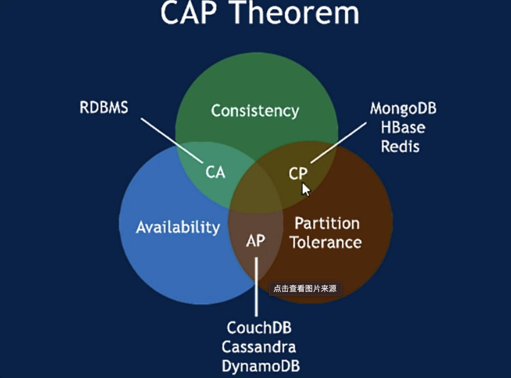

浅析CAP理论&Base理论
浅析CAP理论&Base理论
CAP理论
CAP理论是分布式应用的理论基础，虽然所有的分布式系统在设计时都会向其看齐，但事实上的所有分布式系统都不可能同时满足CAP三种特性：
一致性 [C: Consistency]
在分布式环境中，一致性是指数据在多个副本（分布式节点）之间能否保持数据强一致的特性。在一致性的要求下，当一个系统在数据一致状态下执行更新操作后，应该保证系统的数据仍然处于一致状态。
可用性 [A: Available]
可用性是指系统提供的服务必须一直处于可用的状态，对用户的每一个请求操作总是能够在有限时间内返回结果。好的可用性主要是指系统能够很好的为用户服务，不出现用户操作失败或者访问超时等用户体验不好的情况。
分区容错性 [P: Partition Tolerance]
分布式系统在遇到任何网络分区故障的时候，仍然能够保证对外提供满足一致性或者可用性的服务，除非是整个网络环境都发生了故障。分区容错性要求应用虽然是一个分布式系统，但看上去是在一个可以运转正常的整体。比如现在的分布式系统中有某一个或者几个机器宕掉了，其他剩下的机器还能够正常运转满足系统需求，对于用户而言并没有什么体验上的影响。
这三个基本需求，任何一个分布式系统最多只能同时满足其中的两项，其中P是必须的，所以往往选择实现CP或者AP。
此处的一致性表示实时的强一致性，而不是最终一致性；例如：Redis的主从集群只能保持最终一致性，在发生网络分区时，主从同步的过程中会出现数据不一致的场景，但是等网络恢复之后，从节点会进行一系列操作去追赶主节点的数据变更，数据最终会达到数据一致性，在此期间Redis集群整体依然能够提供服务（可用性），所以，Redi主从集群是AP！
Zookeeper集群是数据强一致性的，如果发生网络分区，Zookeeper集群针对写请求（事务请求）无法完成半数机制场景下，Zookeeper集群是不可用的（即无法保证可用性），所以，Zookeeper集群是CP！
Zookeeper不可用场景：
- Zookeeper不能保证每次服务请求的可用性。(在极端环境下，Zookeeper可能会丢失一些请求，消费者程序需要重新请求才能获取结果)，所以说Zookeeper不能保证服务的持续可用性；
- 进行Leader选举时，整个集群都是不可用的。
取舍策略
CAP三个特性只能满足其中两个，那么取舍的策略就共有三种：
图中指示Redis是CP是针对单机而言的 – Redis单机是CP，Redis主从集群是AP。
CA without P：如果不要求P（不允许网络分区），则C（强一致性）和A（可用性）是可以保证的。但放弃P的同时也就意味着放弃了系统的扩展性，也就是分布式节点受限，没办法部署子节点，这是违背分布式系统设计的初衷的。也就是节点应用。
CP without A：如果不要求A（可用），相当于每个请求都需要在服务器之间保持强一致，而P（分区）会导致同步时间无限延长(也就是等待数据同步完才能正常访问服务)，一旦发生网络故障或者消息丢失等情况，就要牺牲用户的体验，等待所有数据全部一致了之后再让用户访问系统，在此期间集群整体是不可用的。
AP wihtout C：要高可用并允许分区，则需放弃一致性。一旦分区发生，节点之间可能会失去联系，为了高可用，每个节点只能用本地数据提供服务，而这样会导致全局数据的不一致性。典型的应用就如某米的抢购手机场景，可能前几秒你浏览商品的时候页面提示是有库存的，当你选择完商品准备下单的时候，系统提示你下单失败，商品已售完。这其实就是先在 A（可用性）方面保证系统可以正常的服务，然后在数据的一致性方面做了些牺牲，虽然多少会影响一些用户体验，但也不至于造成用户购物流程的严重阻塞。
根据 CAP 原理将 NoSQL 数据库分成了满足 CA 原则、满足 CP 原则和满足 AP 原则三 大类：
- CA - 单点集群，满足一致性，可用性的系统，通常在可扩展性上不太强大。
- CP - 满足一致性，分区容忍性的系统，通常性能不是特别高。
- AP - 满足可用性，分区容忍性的系统，通常可能对一致性要求低一些。
Base理论
BASE是Basically Available（基本可用）、Soft state（软状态）和 Eventually consistent（最终一致性）三个短语的缩写。BASE理论是对CAP中一致性和可用性权衡的结果，其来源于对大规模互联网系统分布式实践的总结， 是基于CAP定理逐步演化而来的。BASE理论的核心思想是：即使无法做到强一致性，但每个应用都可以根据自身业务特点，采用适当的方式来使系统达到最终一致性。接下来看一下BASE中的三要素：
基本可用 | Basically Available
基本可用是指分布式系统在出现不可预知故障的时候，允许损失部分可用性 — 注意，这绝不等价于系统不可用。比如：
（1）响应时间上的损失。正常情况下，一个在线搜索引擎需要在0.5秒之内返回给用户相应的查询结果，但由于出现故障，查询结果的响应时间增加了1~2秒；
（2）系统功能上的损失。正常情况下，在一个电子商务网站上进行购物的时候，消费者几乎能够顺利完成每一笔订单，但是在一些节日大促购物高峰的时候，由于消费者的购物行为激增，为了保护购物系统的稳定性，部分消费者可能会被引导到一个降级页面；
软状态 | Soft state
软状态指允许系统中的数据存在中间状态，并认为该中间状态的存在不会影响系统的整体可用性，即允许系统在不同节点的数据副本之间进行数据同步的过程存在延时；
最终一致性 | Eventually consistent
最终一致性强调的是所有的数据副本，在经过一段时间的同步之后，最终都能够达到一个一致的状态。因此，最终一致性的本质是需要系统保证最终数据能够达到一致，而不需要实时保证系统数据的强一致性。总的来说，BASE理论面向的是大型高可用可扩展的分布式系统，和传统的事物ACID特性是相反的，它完全不同于ACID的强一致性模型，而是通过牺牲强一致性来获得可用性，并允许数据在一段时间内是不一致的，但最终达到一致状态。但同时，在实际的分布式场景中，不同业务单元和组件对数据一致性的要求是不同的，因此在具体的分布式系统架构设计过程中，ACID特性和BASE理论往往又会结合在一起。
总结
对于分布式系统的项目，使用中没有强制要求一定是CAP中要达到某几种，具体根据各自业务场景所需来制定相应的策略而选择适合的产品服务等。例如：支付订单场景中，由于分布式本身就在数据一致性上面很难保证，从A服务到B服务的订单数据有可能由于服务宕机或其他原因而造成数据不一致性。因此此类场景会酌情考虑：AP，不强制保证数据一致性，但保证数据最终一致性。
 微信
微信